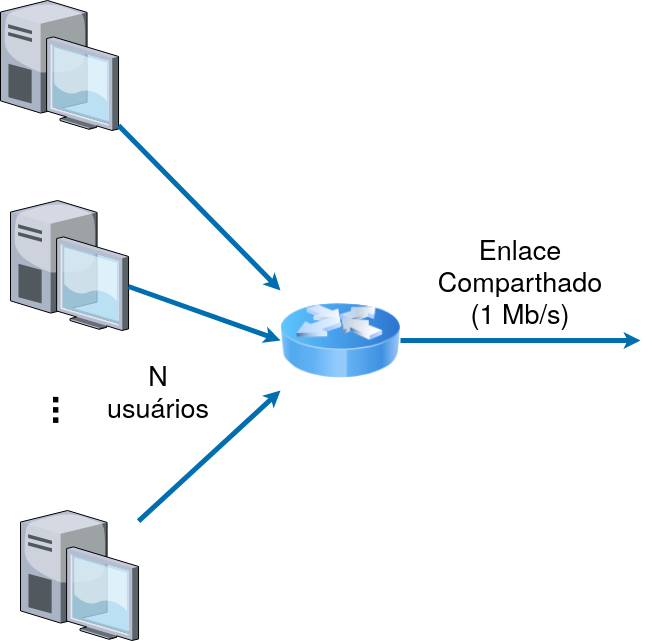

Conforme discutido durante as aulas, métodos de multiplexação combinam vários fluxos, permitindo a transmissão de todos por um mesmo canal de comunicação. Exemplos clássicos incluem o TDM (Time-Division Multiplexing) e o FDM (Frequency Division Multiplexing). Em ambos os casos, o canal de comunicação é particionado em unidades físicas (tempo e frequência, respectivamente) atribuídas de forma exclusiva para cada fluxo.
Vimos também que, em redes de comutação de pacotes, essa combinação de vários fluxos de dados ocorre de maneira natural: à medida que os pacotes são recebidos pelos enlaces de entrada de um comutador, eles são enfileirados na fila do enlace de saída, gerando uma sequência de pacotes a serem transmitidos. Tal sequência representa justamente a combinação dos vários fluxos.
Por conta da natureza aleatória segundo a qual os pacotes dos vários fluxos chegam ao comutador, a sequência de transmissão desses pelo enlace compartilhado se torna, também, aleatória. Dito de outra forma, os momentos em que o enlace compartilhado é usado por cada um dos fluxos são definidos de maneira aleatória. Isso se opõe às naturezas determinísticas do TDM e do FDM que garantem uma oferta totalmente determinística de recursos a cada fluxo.
Essa forma aleatória de multiplexação é chamada de Multiplexação Estatística. Apesar de seu não determinismo, a multiplexação estatística apresenta uma série de características interessantes que tornam seu uso adequado em certas situações. Ao longo desse material, analisaremos mais a fundo o funcionamento da multiplexação estatística para entender quais seriam essas características.
Para entender os potenciais benefícios da multiplexação estatística, considere um cenário como o ilustrado na figura abaixo.
Nele, temos uma série de hosts conectados a um comutador que, por sua vez, possui um enlace de saída de 1 Mb/s ligando-o ao mundo externo. Esse cenário pode representar de forma simplificada, por exemplo, uma empresa que se conecta à Internet através de um enlace de 1 Mb/s e compartilha essa conexão por uma série de estações de trabalho utilizadas por seus funcionários. Esse cenário pode aproximar também a situação de um provedor de Internet que vende seus serviços a N residências de um certo bairro: nesse caso, os hosts da figura representariam essas residências que se conectam através de algum meio físico a um comutador do provedor.
Pensando do ponto de vista do provedor de Internet, uma pergunta importante é: quantos clientes desse bairro podemos conectar a esse mesmo comutador? Suponha, por exemplo, que o provedor venda apenas um plano de 100 kb/s. Por simplicidade, focaremos aqui apenas no upload, i.e., no fluxo de dados dos clientes para o mundo externo. A mesma análise pode ser feita para o download.
Uma primeira análise pode sugerir que o provedor está limitado a 10 clientes, já que 1 Mb/s / 100 kb/s = 10. De fato, se utilizarmos métodos como o FDM ou o TDM para partilhar o enlace compartilhado pelos vários clientes, precisaremos alocar de maneira fixa os recursos do enlace, resultando num limite de 10 clientes.
Entretanto, pense no uso típico da Internet por um usuário final. Considere, por exemplo, um usuário que acesse um portal de notícias e leia algumas matérias. Em geral, o usuário solicitará a página principal do portal, gastará algum tempo lendo as manchetes e escolherá uma notícia em particular para ler. Repare que entre cada solicitação de uma nova página, o usuário passa algum tempo lendo o conteúdo. Durante esse período, em geral, não há necessidade de comunicação entre o computador do usuário e o servidor do portal. Isso significa que, em uma aplicação web típica, os momentos de comunicação efetiva são intercalados com períodos relativamente longos de inatividade. Outras aplicações, como leitura e envio de e-mails, possuem características similares.
O ponto importante aqui é que os fluxos de dados na Internet não são geralmente contínuos, havendo períodos em que um host não transmitirá novos pacotes. Assim, se um provedor aloca de maneira estática fatias de 100 kb/s do seu enlace compartilhado de 1 Mb/s para um determinado usuário, esse recurso ficará ocioso em certos momentos. Suponha, por exemplo, que no universo dos 10 clientes servidos pelo provedor sempre haja ao menos um que não esteja utilizando ativamente sua conexão em cada instante de tempo. Isso singifica que sempre há ao menos 100 kb/s de capacidade ociosa no enlace compartilhado. Para o provedor, seria interessante ele pudesse aproveitar essa capacidade ociosa e vender seu serviço a um décimo primeiro cliente.
A multiplexação estatística permite justamente esse reaproveitamento. Para entender como isso acontece, vamos considerar um exemplo hipotético em que cada cliente usa ativamente seus 100 kb/s apenas 10% do tempo. Repare que o padrão de tráfego dos usuários (i.e., os instantes em que cada usuário transmitirá seus pacotes) é aleatório. Dessa forma, não sabemos exatamente quando os momentos de ociosidade ocorrerão. Mas sabemos que, a longo prazo (por exemplo, ao longo de um dia), usuários gerarão pacotes apenas 10% do tempo. Nessas condições, esperamos poder colocar um número N de usuários maior que os 10 da alocação estática. Mas qual seria o valor exato de N?
Digamos que o provedor venda seus serviços para N = 35 usuários do bairro em questão, todos utilizando o mesmo enlace compartilhado para se comunicarem com a Internet. Se todos eles gerarem tráfego simultaneamente, cada usuário deveria receber 10 / 35 = 28,5 kb/s, um valor bem abaixo do serviço vendido pelo provedor. Na verdade, se mais que 10 usuários desse universo de 35 gerarem tráfego simultaneamente, o desempenho percebido será pior que o contratado. Assim, gostaríamos de saber o quão provável é essa situação, i.e., que mais de 10 dos 35 usuários gerem tráfego simultaneamente.
Se cada usuário utiliza ativamente sua conexão apenas um percentual \(p = 10\%\) do tempo, então, para um dado instante de tempo, podemos calcular a probabilidade de que exatamente um determinado conjunto de usuários utilize o enlace simultaneamente. A probabilidade de que um dado usuário esteja ativo enquanto os demais 34 permanecem inativos é dada por:
\(p\cdot(1-p)^{34}\)De maneira análoga, se consideramos dois usuários específicos ativos e os demais 33 inativos, chegamos a seguinte probabilidade:
\(p^2\cdot(1-p)^{33}\)De forma mais geral, se considerarmos um conjunto de k usuários ativos, enquanto os 35 - k restantes permanecem inativos, obtemos a seguinte probabilidade:
\(p^k\cdot(1-p)^{35-k}\)Repare que a probabilidade acima diz respeito a um grupo específico de k usuários estar ativo, mas com 35 usuários, há múltiplas combinações de \(k\) usuários que podem estar ativos simultaneamente. Por exemplo, para \(k = 1\), há 35 combinações. Para \(k = 2\), há \(\frac{35\cdot 34}{2} = 595\) combinações. Em geral, há \({35}\choose{k}\) combinações.
Assim, a probabilidade de que haja um grupo qualquer de exatamente k usuários ativos simultaneamente é dada por:
\({{35}\choose{k}}\cdot p^k\cdot(1-p)^{(35-k)}\)Lembre-se que nosso objetivo era saber o quão provável era que tivéssemos mais de 10 usuários ativos simultaneamente. Para isso, podemos simplesmente somar a probabilidade acima para k = 11, 12, ..., 35:
\(Pr(k > 10) = \sum\limits^{35}_{i=11}{{{35}\choose{i}}\cdot p^i\cdot(1-p)^{(35-i)}} \approx 0{,}00042\)Em resumo, mesmo com 35 usuários compartilhando o enlace, o provedor entregará o desempenho prometido 99,958% do tempo. Esse número é 3,5 vezes maior que o número de usuários suportado por um esquema de multiplexação estático. Embora haja uma chance dos usuários experimentarem um desempenho abaixo do contratado em alguns momentos, essa probabillidade é bem baixa, sendo, provavelmente, tolerável.
Parâmetros
|